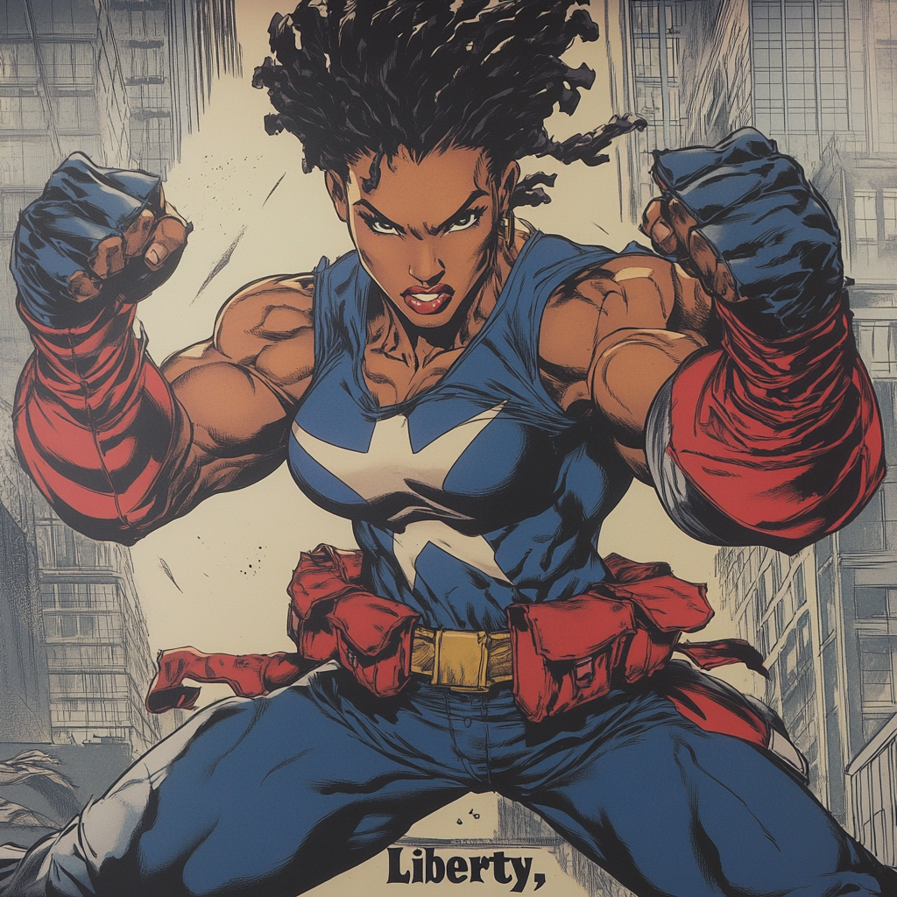

LIBERTY: FREEDOM'S DAUGHTER

Amara Freeman's ancestors fought in every American conflict since the Revolutionary War. Her family tree includes Buffalo Soldiers, Tuskegee Airmen, and civil rights activists. This legacy of service ran deep in her blood, but it was her grandmother Gloria's stories of marching with Dr. King that resonated most strongly with young Amara.
Growing up in Roxbury, Amara witnessed both community strength and systemic inequalities. Her mother worked double shifts as an ER nurse at Boston Medical Center, while her father taught history at Roxbury Community College. They raised Amara to understand that freedom required constant vigilance and active participation.
Amara excelled in academics and athletics, earning a scholarship to Northeastern University's Criminal Justice program. She joined the boxing team, displaying a natural talent that took her to collegiate championships. Professors noted her fierce intelligence and unflinching moral compass, marking her as a future leader in law enforcement.
Her life changed during her junior year when she interned with the Boston Police Department. Responding to a domestic violence call with her training officer, they found a woman badly beaten by her politically connected husband. When the officer received a call to "handle it quietly," Amara refused to leave. The confrontation escalated when the husband attacked them both.
In that moment of crisis, something awakened in Amara. The husband's punch connected with her jaw—but instead of pain, she felt energy surge through her body. Acting on instinct, she redirected the absorbed force in a counter-strike that sent him flying across the room.
The incident was officially recorded as self-defense, but questions about Amara's "excessive force" ended her internship. More importantly, it sparked her journey to understand her new abilities. She discovered she could absorb kinetic energy from impacts and either redirect it immediately or store it briefly to enhance her strength.
Disillusioned with the system but unwilling to abandon her commitment to justice, Amara found purpose in community organizing. She established a women's self-defense program at her grandmother's church and volunteered with youth outreach initiatives. During this period, she secretly tested her powers, learning their limits and applications.
The turning point came when she stopped a bodega robbery in progress. Using her abilities openly for the first time, she disarmed three armed men without a single shot fired. News of the "Roxbury Guardian" spread through community networks, eventually reaching Samuel Revere, who was forming the Minutemen.
Their first meeting was contentious. Amara questioned Sam's understanding of the communities she sought to protect; he challenged her lone-wolf approach. Their debate lasted hours, ending with mutual respect and the foundation of a partnership. Amara agreed to join the team on one condition: they would fight for justice in all Boston neighborhoods, not just the affluent ones.
As Liberty, Amara serves as the Minutemen's moral center and front-line fighter. Her kinetic absorption makes her nearly untouchable in close combat, while her boxing background gives her the technical skill to use that power efficiently. Her specialized gauntlets, developed with Jackson's engineering expertise, help her control and direct absorbed energy with precision.
When not in the field, Amara works as a youth counselor and community advocate. This dual life lets her address both immediate threats and underlying social issues. Her students know her as the tough-but-fair mentor who pushes them toward college and careers; only her teammates know she's the same woman who dismantled a human trafficking ring operating near a local high school.
Liberty leads by example, often taking the most dangerous position in combat. Her teammates sometimes worry about her tendency to absorb more punishment than necessary, seeing it as both tactical advantage and personal penance for those she couldn't help before becoming a hero. Despite this, she remains the team's unwavering foundation, the one who reminds them all what they're fighting for when missions become complicated or compromises tempt them.
"Freedom isn't just a concept," she often says during training sessions. "It's something you have to earn every single day."